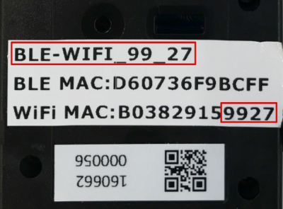
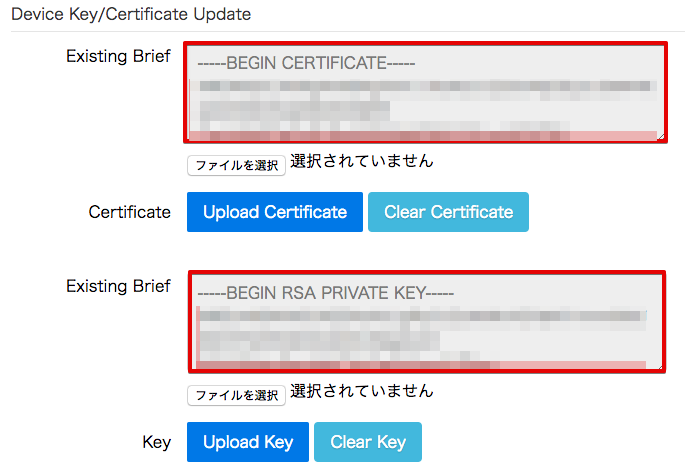
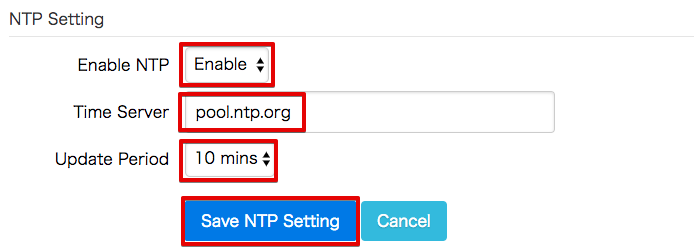
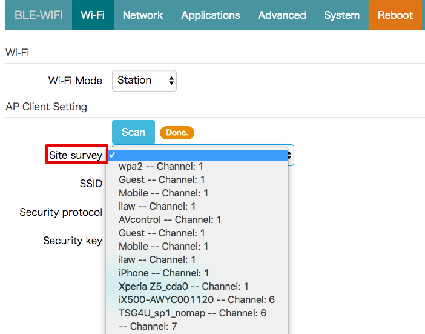
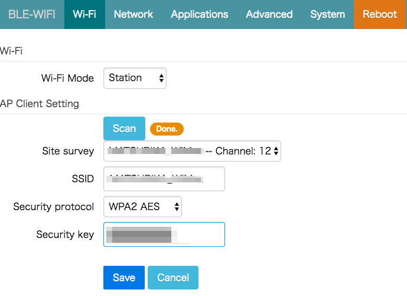

3. BLEゲートウェイの設定¶
レンジャーシステムズ製のBLEゲートウェイの設定を行います。
3.1. 電源投入¶
レンジャーシステムズ製のBLEゲートウェイは、USBで給電する仕組みになっています。
USBケーブルを本体に接続し、電源供給元(USBコンセント、PCのUSBポート等)に接続してください。
3.3. WiFi接続¶
本ゲートウェイは、初期状態ではWiFiアクセスポイント(親機)モードになっており、PCから直接、WiFiで接続し、設定を行います。
電源投入後、ゲートウェイの起動が終わると、WiFi接続が可能なPC等のネットワーク画面で「BLE-WIFI_YY_ZZ」というSSIDが表示されます。
ハンズオンで使用するゲートウェイのモデル名は、iGS01です。SSIDは、「BLE-WIFI_YY_ZZ」になります。
YY_ZZ は、ゲートウェイの背面に記録されているMACアドレスの下２桁になります。 * MACアドレスが、”B03829159927”の場合、SSIDは、”BLE-WIFI_99_27”になります。 * モデルがiGS02の場合、SSIDは、「IGS02_YY_ZZ」になります。
ご自身のゲートウェイのSSIDに接続して下さい。 * WiFiのパスワードは、”12345678”です。
ゲートウェイに接続したまま、インターネットブラウザで「192.168.10.1」にアクセスするとゲートウェイの設定画面 が表示されます。 ユーザー名とパスワードを求めるポップアップが表示されますので、以下を入力し、ログインしてください。
【ユーザー名】admin 【パスワード 】admin

3.4. クラウド接続の設定¶
「Applicatoins」タブをクリックし、下記を参考に、設定を行ってください。 最後に、[Save]ボタンを押して設定を保存します。 Rebootを促すメッセージが出ますが、Rebootしないで下さい。
| 項目 | 値 |
|---|---|
| Application | MQTT Client |
| Host/IP | 記録しておいたEndpoint情報 |
| Port | 8883 |
| Publish Topic | publish_out-<参加者番号> (AWS IoTのルールエンジンで使用します。) |
| Client ID | ranger-gw-<参加者番号> ([Create thing]で作ったThing名) |
| Username | 空欄 |
| Password | 空欄 |
| MQTTS | Enable |
| Root CA | AWSIoT Root CA |
| Use Certificate | Enable |
3.5. 証明書の登録¶
「Advanced」タブクリックし、AWS IoTで作成した証明書をインポートします。
“Certificate”の横の[ファイルを選択]ボタンを押して、保存しておいた証明書を選択し、[Upload Certificate]ボタンを押して、証明書をアップロードします。
“Key”の横の[ファイルを選択]ボタンを押して、保存しておいた認証鍵を選択し、[Upload Key]ボタンを押して、認証鍵をアップロードします。
| 項目 | ファイル |
|---|---|
| Certificate | xxxxxxxxxx-certificate.pem.crt (証明書) |
| Key | xxxxxxxxxx-private.pem.key (認証鍵) |
正常にアップロードが終わると、下記の様にその内容が表示されます。 まだ、Rebootしないで下さい。
3.6. BLEフィルター設定¶
レンジャーシステムズのBLEゲートウェイは、周囲の受信可能なBeaconを全て受信する至要なため、フィルター設定を行います。今回のハンズオンでは、温湿度センサー(iBS01T)を使用しますので、その設定を行います。最後に、[Save]ボタンを押して設定を保存します。
この設定により、周囲のBeaconの中から、温湿度センサー(iBS01T)のBeaconだけを取得できるようになります。上のRSSIは、取得するBeaconの電波強度です。近くのBeaconだけを受信したい場合に使用します。今回は設定しません。
まだ、Rebootしないで下さい。
| 項目 | 値 |
|---|---|
| Payload Pattern | 02010612FF590080BC4D0100D80A2D00000000000000 |
| Payload Mask | FFFFFFFFFFFFFFFFFF00000000000000000000000000 |

3.7. タイムサーバーの設定¶
AWS IOTにデータを送信する際、ゲートウェイは、時刻情報を付加します。 「System」タブクリックし、タイムサーバーの設定を行います。
| 項目 | 値 |
|---|---|
| Enable NTP | Enable |
| Time Server | pool.ntp.org (自動的に入力されます。) |
| Update Period | 1 day |
最後に、[Save NTP Setting]ボタンを押して、設定を保存します。
まだ、Rebootしないで下さい。
3.8. WiFi設定¶
WiFi設定を変更し、インターネットに接続出来るWiFiアクセスポイントに接続します。 [Wi-Fi]タブをクリックし、Wi-Fi設定画面に移動します。

“Wi-Fi Mode”を”Station”に変更し、[Scan]ボタンを押して周囲のアクセスポイントを探索します。探索が終了すると、”Done.”と表示されます。”Site survey”から、アクセスポイントを選んでください。
“Security protocol”は、自動的に設定されます。 “Security key”にWiFiのパスワードを入力し、[Save]ボタンを押して設定を保存します。
3.9. 最終確認¶
ゲートウェイの設定を再度確認して下さい。 ゲストWiFiを使用している場合、Reboot後にゲートウェイのIPアドレスをしる方法が無いため、再設定を行えない場合があります。その場合、ゲートウェイを初期化して最初から設定をやり直す必要があります。ご注意下さい。